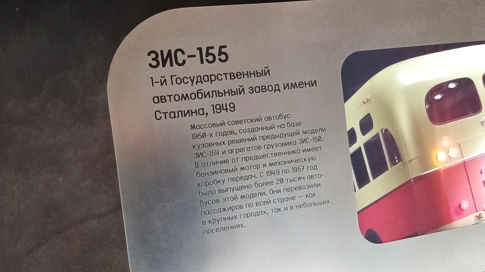
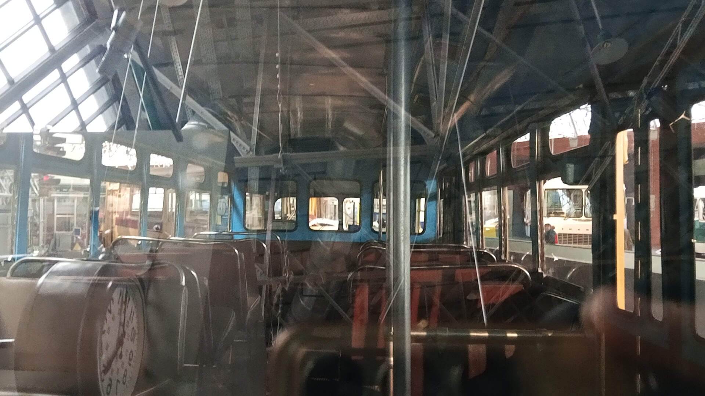

ЗИС-155
Перед вами музейный экспонат — городской автобус ЗИС-155, выпущенный в 1949 году на 1-м Государственном автомобильном заводе имени Сталина.
Это массовый советский автобус 1950-х годов, созданный на базе кузовных решений предыдущей модели ЗИС-154 и агрегатов грузовика ЗИС-150. В отличие от предшественника, имеет простой бензиновый мотор и механическую коробку передач.
Общая информация
🏭 Производство
Завод-изготовитель: 1-й Государственный автомобильный завод имени Сталина (ЗИС)
Год выпуска экспоната: 1949
Период выпуска: 1949–1957
Всего выпущено: Более 20 000 автобусов
📍 Музейный статус
Местонахождение: Музей Транспорта Москвы
Состояние: Не эксплуатируется (музейный экспонат)
География: Перевозили пассажиров по всей стране — как в крупных городах, так и в небольших поселениях
Назначение: Историческая экспозиция
Технические характеристики
Основные параметры
Длина: 8,26 м
Ширина: 2,5 м
Высота: 2,94 м
Полная масса: 10 190 кг
Максимальная скорость: 65–70 км/ч
Силовая установка
Двигатель: ЗИС-124, бензиновый
Мощность: 90–95 л.с.
Объём: 5,6 л
Цилиндры: 6, рядный, нижнеклапанный
КПП: 5-ступенчатая механическая (от ЗИС-150)
Расположение: переднее, справа от водителя
История экспоната
Создание замены ЗИС-154
Первый опытный ЗИС-155 был выпущен 8 декабря 1946 года, ещё до начала серийного производства ЗИС-154. Главной причиной ускоренной разработки новой модели стала ненадёжность электротрансмиссии предшественника. ЗИС-155 создавался как «переходная» модель от опередившего время ЗИС-154 к более простой конструкции.
Выпуск экспоната
Именно этот экземпляр был собран на ЗИСе в 1949 году. С этого года ЗИС-155 поставили на конвейер. Моторный отсек перенесли из кормы в переднюю часть, а агрегаты взяли от грузовика ЗИС-150. Это радикально упростило конструкцию и эксплуатацию.
Массовый выпуск
За 8 лет производства было выпущено более 20 000 автобусов. ЗИС-155 также экспортировался в Польшу, ГДР, Китай, Монголию и Афганистан. В Москве некоторое время эксплуатировались автопоезда в составе ЗИС-155 с прицепами.
Музейный экспонат
Автобус бережно сохранён и представлен в экспозиции Музея Транспорта Москвы. Он напоминает о самой массовой модели городского автобуса 1950-х годов.
Фотогалерея

Общий вид экспоната.

Музейная информация.

Внутреннее убранство.
Нажмите на фото для увеличения
«ЗИС-155 стал главным городским автобусом 1950-х годов и заложил основы следующих аналогичных моделей. Эту жёлто-красную машину можно увидеть практически во всех фильмах 50-х годов».